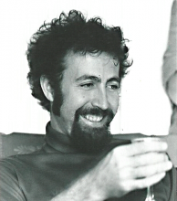

Please note: the AAS Obituaries are temporarily being hosted on this website while their full content is being ingested into the PubPub publishing platform newly adopted by the Bulletin of the American Astronomical Society. When the migration is complete, your existing links will take you to the final, migrated content. Contact peter.williams@aas.org with any questions.
Robert Andrew Schommer (1946-2001)
Dr. Robert A. Schommer, a widely recognized expert on stellar populations and on cosmology, died tragically on 12 December 2001, in La Serena, Chile. Since 1990, he had been on the staff at the Cerro Tololo Interamerican Observatory, where he was the equivalent of full professor, and where he had become the Project Scientist for the U.S. Gemini Project Office.
Bob leaves behind his wife Iris Labra, and three children, Paulina, Andrea, and Robert. Bob was born in Chicago on 9 December 1946, to Harvey and Bea Schommer. Bob spent two years in a seminary in Chicago between high school and his physics studies. His scientific education included a BA in Physics (1970) at the University of Chicago, and an MS in Physics at the University of Washington (1972), followed by a transfer to the Washington Astronomy Department and a PhD in 1977.
Bob had many nicknames: "Bob," "Bobo," "Bobby," "Schommer," and "Dr. Doom." The most telling nickname, however, was given to him by the technical staff on Tololo Mountain (most of us do not want to know their nicknames for us): "Tio Bob," which means "Uncle Bob."
Much scientific collaboration sprang up among the Washington graduate students, whose offices were in a separate building from those of the faculty. Bob and Ron Canterna used the then-new Washington photometric system to explore the clusters of the outer halo of the Milky Way, and came to the conclusion that there was no metallicity gradient in the outer halo. They also found the first carbon star in a dwarf spheroidal galaxy from this broad-band photometry. Bob and I began our study of the stellar content of the Ursa Minor dwarf spheroidal galaxy. He later gave finding charts of giants and carbon star candidates in several dwarf spheroidal galaxies, including Ursa Minor and Leo II, to the late Marc Aaronson (1950-1987), thus allowing Aaronson and Jeremy Mould to observe for their classic survey of the properties of red giants in dwarf spheroidals. Bob and Greg Bothun began collaboration with their advisor, Woody Sullivan, to study the H I content of galaxies in several nearby clusters using Arecibo data. Schommer and Bothun realized that this work had more scientific power when used in concert with the infrared photometry of Aaronson and Mould and John Huchra. The new Arecibo data and new photometry were then exploited in a series of papers that challenged the established size scale of the universe.
Bob went to Caltech in early 1977 as a post-doc on a Chaim Weitzmann fellowship, and began studies of the stellar content of Magellanic Cloud clusters using photographic plates from Las Campañas. He spent a year in Seattle as an instructor, where he taught Galactic Astronomy in the style of his mentor, Paul Hodge. Bob also spent time at Yerkes Observatory, and used a NATO post-doc to work at the Institute for Astronomy in Cambridge, England.
Bob was a professor in the Physics Department at Rutgers University for about a decade, after his itinerant post-doc/instructor period, and before his move to CTIO. During this time his science included some of the first CCD-imaging studies of LMC clusters, a paper on what is now called the "short distance" to the LMC, a study of the kinematics of the system of LMC clusters, the abundances and age-metallicity relation of those same clusters, and a provocative comment about the mass and extent of the LMC. He also collaborated with Carol Christian on the cluster system of M33 and ultimately showed how different the cluster systems of the Milky Way, the LMC, and M33 were. Furthermore, Bob teamed up with fellow Rutgers Professor Ted Williams to bring the Rutgers Imaging Fabry-Perot to CTIO where it was available to the community for several years.
Bob and George Lake began their studies of the dark matter contents of galaxies in the early 1980s while Lake was at Bell Labs and sharing living quarters with Bob. They derived M/L of galaxies from studies of binary galaxies, and later teamed up with Jacqueline van Gorkom to measure the rotation curve of DDO 170 out to a distance of 7.4 disk scale lengths.
During the 1980s and 1990s Bob's interests in halos of galaxies, masses of galaxies, kinematics of galaxies, and the local and global distance scales continued. After moving to Cerro Tololo he began to be more involved in supernovae and cosmology, starting an incredibly productive decade of research with Nick Suntzeff, Mark Phillips and many others. While the supernova research seems to have taken most of his scientific time (he once calculated that he had only 10% of his time to do science), he was still involved in studies of the cluster and old stellar populations in nearby galaxies, often using HST. His work in the 1990s will be largely remembered for the Tololo-Calan collaboration and the High-Z Supernova Search, which ultimately led to the paper (Riess et al, 1998, AJ, 116, 1009) arguing that we live in an accelerating universe with a cosmological constant.
Bob’s collaborations were remarkable for their inclusiveness. There was no team leader, everyone was equal. These collaborations were strengthened because of this attitude, plus they were fun! Bob’s colleagues all felt that they were his friends, which of course made daily interactions more enjoyable, and allowed more work to get done. Bob's attitude was that we are all in this together, observatory directors and scientific colleagues and engineers and technicians and support staff. He treated everyone as he expected to be treated. Bob also believed that observers all have to help each other, for telescopes and weather have a way of not quite cooperating, potentially leaving us stranded without that last piece of data. He gave freely of his observing time and of his observing skills.
Bob's inclusiveness, his caring for other observers, his skills as a diplomat and a gadfly and instrument builder, and his excellent training and experience in both physics and astronomy made him a natural choice as head of the US Gemini Project Office. For Bob, the mission was how to get the observers their observations with a minimum of bureaucratic and technological impediments. For many of us, it came as a surprise that he was willing to give up much of his scientific time to undertake what seemed to be this hopeless chore. The countless meetings and telephone conversations did take something significant away from Bob, but from all accounts he was a calming and sensible influence on the US Gemini project.
Bob cared passionately about politics going back at least to his days as an undergrad at Chicago during the Johnson and Nixon Vietnam days. He was a liberal in the true sense of the word, not as it has been co-opted today. He financially supported many causes such as Amnesty International, and was a board member of a small foundation, called the Fantasy Salvage Fund set up in the bequest of his late college friend Harold Seewald, which tried to help causes dear to the hearts of those [mostly] 1960s University of Chicago students: a grant to a Mexican political asylum-seeker to support her while her asylum application was processed; a purchase of computers for Seewald's local public library; a Free Tibet/Tibetan spirituality conference; the Zip-Zap Circus School in South Africa (which trains orphans from all over the world in circus skills for future careers as circus performers); the Harold Seewald Hampshire County Fuel Fund (providing fuel subsidies for low-income people); and a matching grant to the Meekins, MA, library.
Bob believed in helping others. He moved to Tucson twice in the late 1980s to be with me after the tragic death of our collaborator Marc Aaronson. Bob left Rutgers for a while to care for his sister and her children during her serious illness. Bob brought his nephew Bill to Chile for a year to help resolve some family problems. Bob was also Uncle Bob to children of many friends.
A section of the Cerro Tololo Interamerican Observatory web pages is set aside to present memorial material on Bob Schommer and links there can be followed to a web page that contains many photos that illustrate Bob's active and friend-filled life:
http://www.ctio.noao.edu/pers/schommer.html
. A longer version of this obituary essay is included there.
There were many other pleasures in having known Bob. He was fanatic about sports and music. Cassettes and emails flowed to many of us. Bob rarely slept completely through the night, so he could be counted on to send email at all hours to help his observing friends survive. Observing nights are much longer without Bob.
Obituary written by: Edward W. Olszewski (Steward Observatory, University of Arizona)
BAAS Citation: BAAS, 2002, 34, 1375
SAO/NASA ADS Bibcode: 2002BAAS...34.1375O